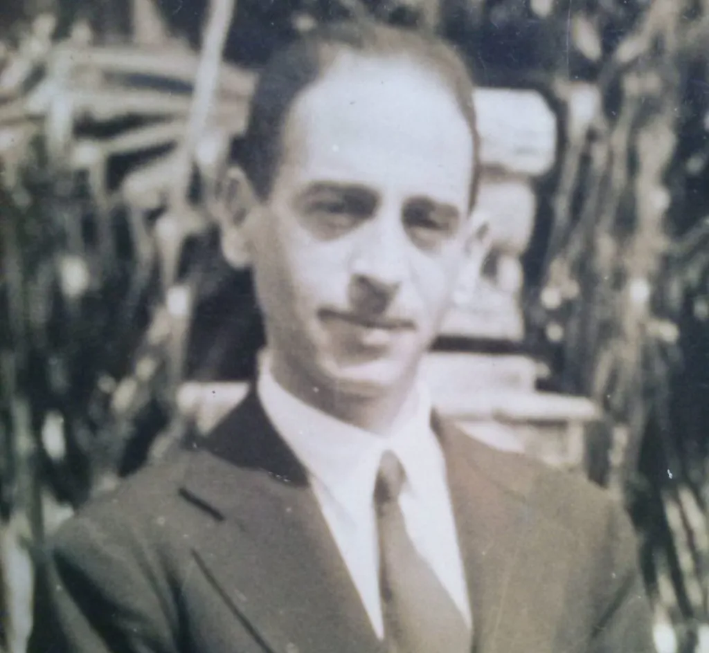

Sobre o nosso site
#MAIORCAMPEÃODOBRASIL
Esse site foi criado com a intenção de mostrar a linda História da Sociedade esportiva Palmeiras, desde a fundação até os dias atuais, tendo diversos campos para você se divertir, como quiz sobre o Palmeiras, e o principal mostrar os títulos que o nosso querido verdão conquistou.
História
O Palmeiras surgiu no dia 26 de agosto de 1914, fundado por imigrantes italianos, tendo uma participação direta do Fundador Luigi Cervo, onde a ideia central da criação era a de que esse time de futebol conseguisse reunir a colônia italiana que havia imigrado para o Brasil.
Seu primeiro nome foi Società Sportiva Palestra Italia, em 1942 quando estava estabelecida como uma força do futebol paulista, a equipe foi obrigada a trocar de nome, passando a se chamar Sociedade Esportiva Palmeiras em decorrência da Segunda Guerra Mundial.
Logo após esse acontecido, a SE Palmeiras começou a ganhar bastante relevância para o Brasil, por conta dos diversos títulos, e o principal, a torcida, que canta e vibra sempre pelo o clube, fazendo assim parte de sua história e conquistas.

Imagem de Luigi Cervo, Fundador do Palestra Itália, em 1914.